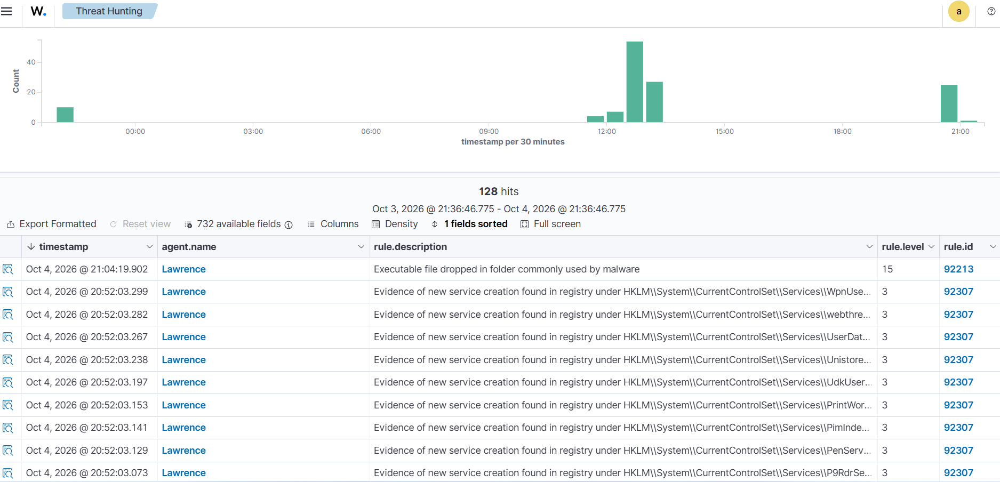
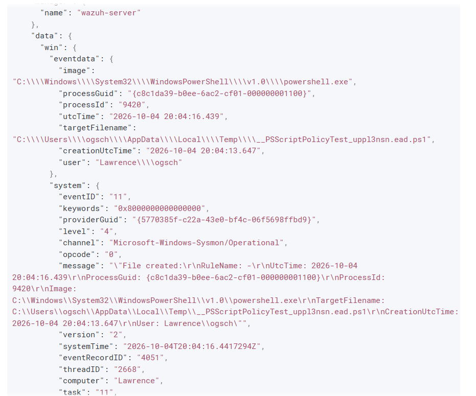
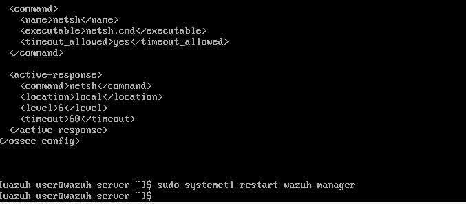
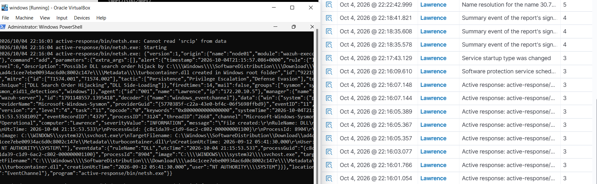

Summary
I built a small, self-contained EDR lab to answer a specific question: if a Windows endpoint I'm responsible for gets compromised, does my monitoring actually catch it — and can the response happen automatically, before I even look at a dashboard? I deployed a Wazuh agent with Sysmon telemetry on a Windows 11 VM, simulated two real MITRE ATT&CK techniques against it using nothing but PowerShell (no external attacker tooling), confirmed both were detected and correctly mapped to their techniques in Wazuh's Threat Hunting view, and then configured an Active Response rule on the Wazuh manager that automatically isolates the endpoint via netsh the moment a high-severity alert fires. The isolation triggered for real — not in a test — against a DLL Search Order Hijack detection that came up during the exercise.
Lab architecture and stack
- Wazuh Manager — pre-built OVA appliance, Linux,
172.20.10.4 - Windows 11 Enterprise endpoint — hostname "Lawrence," running the Wazuh Agent
- Sysmon — installed on the Windows endpoint to generate detailed process and registry telemetry, forwarded to Wazuh through the agent
- Simulation framework — Atomic Red Team-style technique execution, mapped to MITRE ATT&CK, run as plain PowerShell (no third-party attack framework needed to prove detection)
Phase 1: Environment setup and agent verification
Before trusting any detection results, I confirmed the full telemetry pipeline was actually live end to end: the Wazuh agent registered and reporting healthy, and Sysmon running and generating events underneath it. Both services needed to show Running independently — a registered-but-not-reporting agent, or a healthy agent with a dead Sysmon service underneath it, would have made every later detection meaningless.
Phase 2: Threat simulation execution
I simulated two distinct MITRE ATT&CK techniques directly from an elevated PowerShell session on the endpoint — deliberately using only native Windows tooling, to mirror how a real "living off the land" intrusion looks to a defender rather than something only a dedicated red-team tool would trigger.
T1547.001 — Boot or Logon Autostart Execution: Registry Run Keys (persistence):
New-ItemProperty -Path "HKCU:\Software\Microsoft\Windows\CurrentVersion\Run" ` -Name "AtomicTest" -Value "calc.exe" -PropertyType String -Force
T1057 — Process Discovery (reconnaissance against a sensitive process):
Get-Process -Name "lsass" | Select-Object Id, ProcessName, Path
Phase 3: Detection and telemetry analysis
Both actions needed to show up as real, attributable detections — not just raw log noise — to count as a working pipeline. In Wazuh's Threat Hunting dashboard, the activity generated 128 hits across multiple correlated detection rules, correctly correlated back to the technique that triggered them rather than appearing as unrelated, disconnected log lines.

I then dropped into the raw Sysmon telemetry behind one of the alerts to confirm the underlying data was as rich as the summary view implied — full process lineage, command line, and parent-process context, not a stripped-down summary:

Phase 4: Automated active response and host isolation
Detecting an incident is only half the job; the part that actually matters at 3am is whether containment happens without a human in the loop. I configured a custom Active Response block directly on the Wazuh manager's ossec.conf, tying a netsh-based isolation script to any alert at severity level 6 or above:
<command> <name>isolate-host</name> <executable>isolate-host.cmd</executable> <timeout_allowed>yes</timeout_allowed> </command> <active-response> <command>isolate-host</command> <location>local</location> <rules_id>100100</rules_id> <level>6</level> </active-response>
sudo systemctl restart wazuh-manager
This didn't just pass in an isolated test — it fired for real partway through the exercise. A separate detection for DLL Search Order Hijack (T1574.001 / T1574.002) crossed the severity threshold and triggered the configured response automatically, confirmed on the Windows endpoint's own active-responses.log:


Lessons learned
Mapping simulated activity to specific MITRE ATT&CK technique IDs (T1547.001, T1057, T1574.001/.002) rather than just "ran some suspicious commands" made the detections far easier to validate and write up — I knew exactly what each alert should correspond to before I went looking for it. The active response piece was the most valuable part of the project precisely because it wasn't scripted to succeed: it triggered against a detection I hadn't specifically engineered for, which is a much more honest test of whether the pipeline works than running it against the exact scenario it was built for. The main technical takeaway carried over from this project is that EDR is only as good as the telemetry underneath it — the Sysmon configuration and agent health check in Phase 1 mattered as much to the outcome as the detection rules or the response logic did.